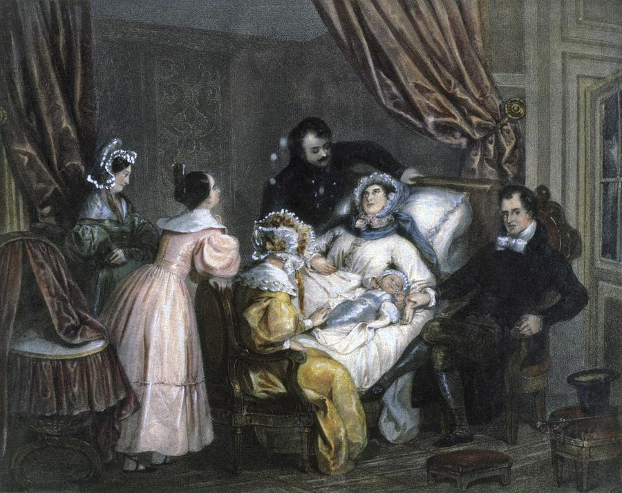

Artist Inventory
19th century art was generally limited. Artists painted portraits and renderings of important scenes in order to commemorate them, similarly to how we use photographs in our modern day world. Pictured below is an example of such a painting - a rendering of an important scene, childbirth.
'Childbirth Scene' - 1840, Artist unknow
Then came Vincent Van Gogh. He decided to paint a landscape, an unconventional piece of work but, that is not why it made a large imprint on the art world upon discovery; he had also chosen to paint in a completely unconventional style. Van Goh painted how he felt, how he wanted to see the image, by himself and for himself, an extremely risky style for a struggling artist of his stature. Unfortunately, his art remained labelled "risky" and "unconventional" during his lifetime and so, it never took off. Only after his lifetime was he finally seen for the truly inspiring, creative work he did such as the notoriously famous 'Starry Night'.

Vincent Van Goh's 'Starry Night' - 1889
Welcome to the artist inventory website - a gallery of this past century's most influential artists

Salvador Dali's 'The Persistence of Memory' - 1931
This page will take you on a journey through a display of this past century's most influential artists and their work.
The 20th century produced several incredibly bold art movements where artists broke down walls and rules of society's perspective of art in order to explore new realms and possibilities, creating beauty none could have even imagined. Artists' innovative work largely set the foundations of inspiration for artists to come after them and through this page I will be demonstrating such actions from a select few whom I believe to be of most influential. These artists have changed or rather, birthed new art movements, and I will briefly discuss some of their work during this transformative era.
I will then briefly take you on a journey into 21st century art. There is an incredible abundance of talented people in today's world and I will take the time to again, select a few of my favourites in order to showcase their work and how they carried out the legacies of the grandfathers of the artworld and thereafter, implemented these movements in their own, creative ways.
The three historical 20th century artists I have chosen to cover include:
- Pablo Picasso
- Claude Monet
- Edvard Munch
I have selected these three as in my opinion, their paintings truly step out of the zone of what was considered to be 'safe' or rather, 'correct', 'good' art at the time. Their work truly tested the boundaries of art by painting truthful paintings, strangely creative paintings and simply, beautiful paintings. All three were bold in their own way and I look to expand on each one in their own page:
- Picasso for being the father of the artistic movement 'modernism' - the first to revolutionize art by not adhering to its associated rules of abiding to the techniques of previous artists.
- Monet for being the first to truly commemorate beautiful landscapes, varying lightings, changing seasons and much more beauty that he found in his own humble surroundings.
- Munch for being the first to truly convey deep, soul searching art by stretching the boundaries as thin as possible of 'acceptable' art by being so bold and daring expressing the deepest, darkest human emotions in the form of art work.